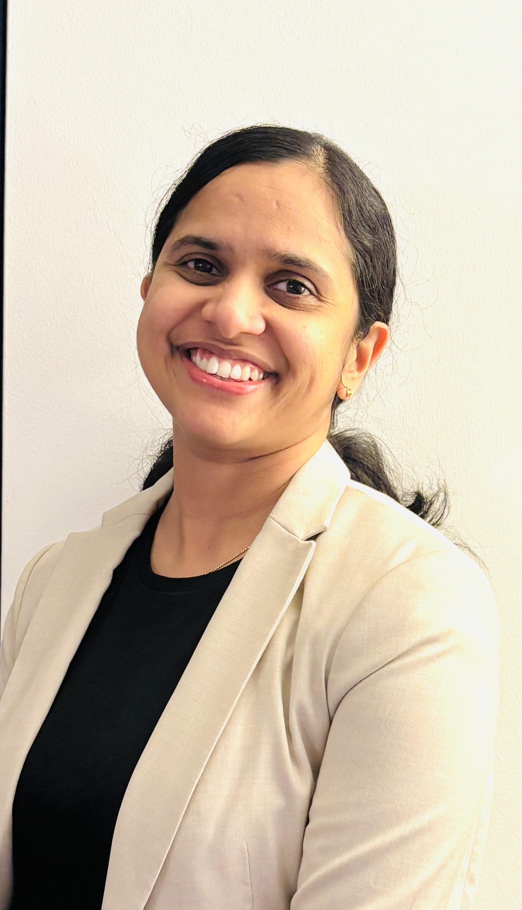

NLP Researcher · IDSIA, Switzerland
I work on making language AI systems fairer, more reliable, and genuinely useful across the world's languages. My research spans multilingual fairness in LLMs, uncertainty quantification, biomedical NLP, and retrieval-augmented generation — with a particular interest on low-resource language settings.
Research
Investigating how existing measures of representational bias — Tokenization Parity and Information Parity — correlate with downstream performance across dialectal NLP tasks. Currently building fairer, more balanced tokenizers as part of the Swiss AI Apertus Tokenization Team.
Developing uncertainty evaluation frameworks combining entropy, ECE/ACE calibration, and verbatim memorization probing. Working with credal sets and imprecise probability theory to build richer uncertainty representations for LLMs in high-stakes settings.
PI on a Hasler Foundation Young Researcher Grant targeting inter-sentential and N-ary biomedical relation extraction using graph neural networks and LLM-based approaches. Active work in clinical NER, discharge summary analysis, and biomedical knowledge graphs.
Studying failure modes in multilingual RAG: knowledge conflicts, script fidelity mismatches, and evidence utilization across languages. Co-supervising PhD research producing papers at ACL 2026 and CLEF 2026. Also active in Financial AI RAG applications.
Publications
Full list of 40+ publications: Google Scholar · ORCID · ResearchGate
Positions & Education
IDSIA – Dalle Molle Institute for Artificial Intelligence Research, Lugano, Switzerland
PI · Hasler Foundation GrantIDSIA – Dalle Molle Institute for Artificial Intelligence Research, Lugano, Switzerland
Amrita Vishwa Vidyapeetham, India · SERB Junior Research Fellowship, Govt. of India
Thesis: Extrinsic Text Plagiarism Detection using NLPCochin University of Science and Technology, India
Cochin University of Science and Technology, India
Key Roles
Hasler Foundation Young Researcher Grant — Biomedical Inter-sentential and N-ary Relation Extraction
Armasuisse Science & Technology — Multilingual Tokenization Project
Swiss AI Apertus National Initiative — Fairer multilingual tokenizer development and evaluation
IDSIA — RAG and knowledge graph approaches for banking applications
IDSIA — Causal reasoning and uncertainty quantification in LLMs
4 active PhD students across institutions (co-supervisor/subject expert) — LLM uncertainty, Automatic Student Grading, Bias mitigation, RAG evaluation
Armasuisse Science & Technology — Dialectal NLP Project
Teaching & Supervision
Grants & Funding
Biomedical inter-sentential and N-ary relation extraction using graph neural networks and LLM-based approaches · 2023–Present
Department of Science & Technology, Government of India · PhD funding · 2013–2018
Service & Talks